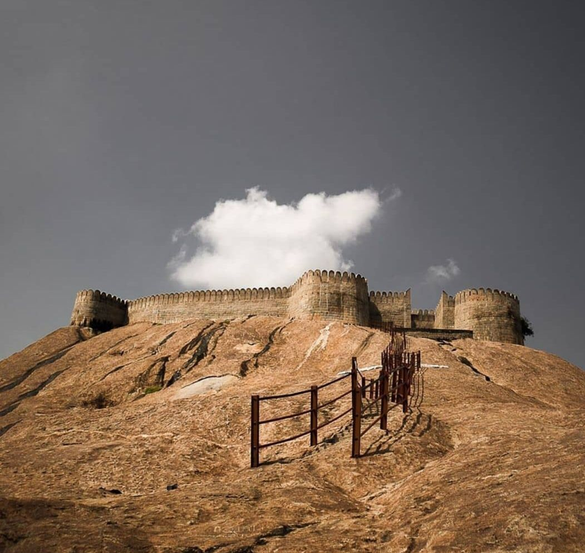

NAMAKKAL
NAMAKKAL FORT

Namakkal Fort is a historic fort present in Namakkal in Namakkal district in the South Indian state of Tamil Nadu. The fort was built during the reign of Thirumalai Nayak of Madurai in 17th century.
It was under the dominion of Tipu Sultan and then switched hands to the British East India Company as a part of Srirangapattinam treaty. The fort was used as a watch tower and garrison by the ruling empire.
The fort is located on the top of a hillock made of a single rock, 75 m (246 ft) tall. There is a temple and a mosque that are located within the fort, both of which are popular tourist attractions of the town.
In modern times, the fort is under the control of the Archaeological Department of the Government of Tamil Nadu.